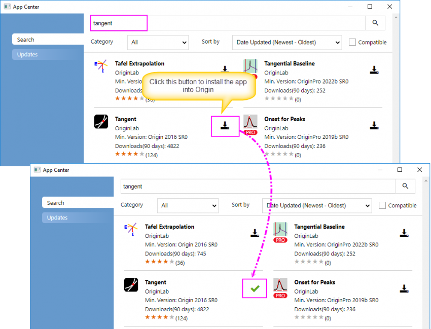

Apps in Origin
GSB-apps
Abgesehen von den Hilfsmitteln und dem Funktionsumfang, die bereits mit Origin ausgeliefert werden, haben Sie die Möglichkeit, kostenlose Apps zu installieren, um die grafischen und analytischen Funktionalitäten von Origin noch zu erweitern.
In diesem Tutorial zeigen wir Ihnen, wie Sie eine App suchen, sie installieren und dann verwenden, um eine Tangentenkurve bei einem bestimmten Punkt eines Punkt-Liniendiagramms zu zeichnen.
- Drücken Sie die Taste F10, um das App-Center zu öffnen.
Hinweis: Sie können das App-Center auch aufrufen, indem Sie Apps hinzufügen in Fenster der Apps-Galerie wählen.
- Wählen Sie die Registerkarte Suchen und geben Sie Tangent in die Suchmaschine ein. Klicken Sie auf das Symbol Suche, um nach der App zu suchen. Klicken Sie auf das Symbol Download and Install. Wenn Sie App installiert ist, verwandelt sich das Download-and-Install-Symbol in ein grünes Häkchen (das Symbol für Aktuelle Version).

| Hinweis: Neben dem Installieren von Apps in der Apps-Galerie können Sie auch zum Dateiaustausch von OriginLab gehen, um die gewünschte App herunterzuladen. Ziehen Sie die .opx-Datei per Drag&Drop in den Origin-Arbeitsbereich, um sie zu installieren. Die Details können Sie hier sehen. |
- Schließen Sie das App-Center. Ein Symbol mit dem Namen Tangent wird im Fenster der Apps-Galerie gezeigt, das rechts im Arbeitsbereich verankert ist.
- Hier können wir neue Registerkarten zur Apps-Galerie hinzufügen, um die installierten Apps zu verwalten. Klicken Sie mit der rechten Maustaste auf einen leeren Bereich der Galerie und wählen Sie Neue Registerkarte. Klicken Sie dann doppelt auf den Standardnamen der Registerkarte und geben Sie der Registerkarte den Namen "Grafische Darstellung".
- Gehen Sie zurück zur Registerkarte Alle. Klicken Sie mit der rechten Maustaste auf das Symbol der App Tangent, die wir gerade installiert haben. Wählen Sie Registerkartenansicht: Grafische Darstellung. Die App wird jetzt auf der Registerkarte Grafische Darstellung gezeigt.
- Importieren Sie die Datei <Origin-Verzeichnis>\Samples\Curve Fitting\Exponential Decay.dat in eine neue Arbeitsmappe.
- Markieren Sie die Spalten col(A) und col(B) und wählen Sie Zeichnen: Einfache 2D: Punkt-Liniendiagramm im Origin-Hauptmenü, um ein Punktdiagramm zu zeichnen.
- Klicken Sie auf die Schaltfläche Tangent in der Apps-Galerie, um den Dialog Tangent: addtool_tangent zu öffnen.
-
Hinweis: App-Operationen können fensterspezifisch sein.
- Wenn die App abgeblendet (ausgegraut) ist, kann die App nicht im aktiven Fenster ausgeführt werden. Überprüfen Sie, welcher Fenstertyp erforderlich ist (fahren Sie mit der Maus über das App-Symbol in der Apps-Galerie).
- Wenn der Origin-Fenstertyp (Arbeitsblatt, Diagramm etc.) für die App geeignet ist, können Sie die App durch einen Klick auf sie in der Apps-Galerie starten.
|
- Behalten Sie die Standardeinstellungen bei und klicken Sie auf OK. Eine rote vertikale Linie und eine blaue Tangente werden zu der Zeichnung hinzugefügt. Der Wert der Steigung wird oben gezeigt. Der Punkt der Tangente ist der Schnittpunkt der beiden Linien.
- Sie können den roten Anker in eine Position verschieben. Klicken Sie auf die dreieckige Schaltfläche in der oberen rechten Ecke des Layers, um Neue Ausgabe (O) auszuwählen und die Ergebnisse auszugeben. Sie können auch Einstellungen... in diesem Kontextmenü auswählen, um den Dialog mit den Einstellungen der Tangente zu öffnen. Hier können Sie weitere Einstellungen vornehmen, z. B. die Glättungsmethode modifizieren.